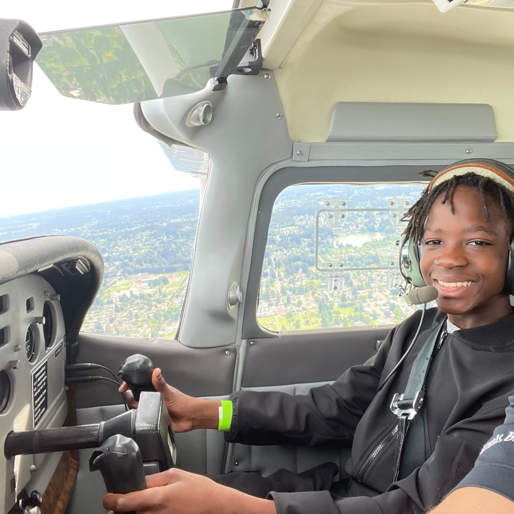

About

I've loved aviation since I was two years old. I want to be a pilot. Until then I photograph airplanes.
That's me flying. Everything else on this site was shot from the ground, looking up — this is the other side of it, and the reason I bother with any of the rest.
My home field is Seattle–Tacoma International — Sea-Tac, KSEA. It's a good one to learn on. Alaska and Horizon fly almost everything short-haul, Delta parks its widebodies on Concourse A, and the international arrivals come in over the water in the afternoon. Every August the Blue Angels fly Seafair over Lake Washington, which is the best week of the year.
The rest I picked up travelling — out of airline windows, off jetways, and from whatever gate I happened to be sitting at. Each photograph says where it was taken on the strip underneath it, so you never have to guess.
North of here is Paine Field, in a town called Everett, which is where Boeing builds the big twins and where the Dreamlifters land. Same name as me. I didn't plan that, but I'll take it.
How this site is organized
By what the airplane is, not by when I shot it — widebodies, narrowbodies, regional, freight, military, vintage. Every photograph carries a strip underneath it, the way an air traffic controller writes one: registration, type, operator, and the field I caught it at. If I don't know a registration I leave it off rather than guess.
The collections aren't full yet. Some of what you'll see is a stand-in from Wikimedia Commons holding a spot until I get my own frame of that type. Those are all listed on the credits page, and they come off the list as I replace them.
Gear and method
Whatever I have with me. Some of these are off a real camera and some are off a phone through a jetway window. A spotter's rule is that the frame you got beats the frame you'd have got with better glass.